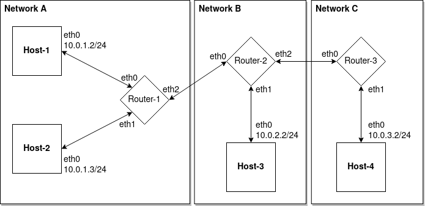

Wednesday December 28, 2022.
Back To Articles
In the last article we took a look at how to use tcpdump to monitor packets flowing through the network. But if we pause and think about how the packets made it from their source to their destination, things don't quite seem to make much sense. How did the bridge devices know where to send the packets? After all, the veth devices hooked into the bridges did not have ip addresses at all, and the other sides of those veth devices, while they did have ip addresses, are completely isolated in another namespace and so how could the bridge know anything about those ips? You might think the two ends of the veth device know completely about one another, all their peer's properties, and so the bridge somehow found this out by querying the veth device linked to it.
Recall that the veth devices are intended to mimic actual ethernet cables. So, if we think the bridge is asking the device for its peer's ip, then we must also think that if this was a real ethernet device attached, the bridge would be asking the real ethernet cable for the ip address at the other end of that cable. That's not completely outlandish. One could imagine a protocol where the cable itself was aware of the ip addresses at either side and had some means of responding to queries. However, there are a number of drawbacks to such a solution. It adds additional complexity to the ethernet design and tightly couples distinct concepts together, to name a few.
Actually, the ethernet cable has one job only - to transmit data. The data we typically place on the cable and send from one host to another is often packaged inside an ethernet frame, though this is not the only data-framing protocol that exists, but it is the most popular. An ethernet frame consists of a number of different fields, including a source and destination address. These addresses are not ip addresses though, they are hardware addresses called MAC addresses. MAC addresses are unique to each device and are given to a device by the manufacturer. An ethernet frame only knows about these hardware addresses and nothing else in terms of routing information. In addition to these addresses, an ethernet frame also consists of a data section, which can hold up to 1500 bytes of arbitrary data that are opaque to the protocol, and a frame check sequence, which is used to detect any errors in the frame.
Generally, networking protocols form a stack of layered protocols, one on top of the other, called the OSI model. At the very bottom of this model is the physical layer, which is the ethernet cable itself, or whatever medium is used to transmit the data (radio waves for wifi, etc.). Above that is the link layer, which describes how this data is framed or formatted when transmitted. Ethernet frames are only example of a layer 2 (link layer) protocol for transmitting data. The next layer, layer 3, is called the network layer and this is where the internet protocol (IP) resides. Layer 3 is the layer that knows about and deals with ip addresses. Layer 2 does not know anything about ip addresses.
When the ping program tries to send out an ICMP packet, it needs to create an IP datagram, which is the format in which data is transmitted at layer 3. The IP datagram is placed inside the ethernet frame's data field. Recall the ethernet frame's data field can hold up to 1500 bytes of data. That's where the IP datagram resides. But this means that fundamentally, the ethernet frame must be constructed and that frame is the base layer of the data that actually gets sent through the network. In order to construct an ethernet frame, the ping program needs to put its MAC address as the source and it needs to figure out the MAC address of the destination.
Let's refresh our memory as to what our virtual network topology looks like again:
There is still the question of how does Host-1 figure out the MAC address it needs to use so that it can send data to Host-3, when it really wants to speak in terms of ip addresses. The answer is ARP, or the Address Resolution Protocol. The purpose of this protocol is to build associations between ip addresses and MAC addresses. An ARP request gets sent out as a broadcast message, which means it is sent to every other device on the network, and it asks for whomever owns a certain ip address to respond back with their MAC address. The ARP reply gets sent out in response to this, by the machine that owns that ip address, and it tells the sender what its MAC address is. Before the ping program can construct an IP datagram, it first needs to learn the MAC address of its target so that it can construct the ethernet frame which the IP datagram will be placed inside.
We're going to re-run the same tcpdump and ping scenario as we did in the previous article, but this time we will capture both ARP and ICMP packets, so that we can see this lower-level protocol going on as well. In addition to that additional filter, we are also going to use the -e flag, so that tcpdump will also display the ethernet frames as part of its output, since otherwise this isn't shown. Let's run that:
$ ./setup_network.sh
Creating namespaces...
Creating bridges...
Creating virtual ethernet cables...
Connecting virtual cables to bridges...
Assigning host ip addresses...
Setting all devices to promiscuous mode...
Turning all devices up...
Configuring routing rules...
$ ./run_tcpdumps.sh ./out/ icmp or arp -vv -n -e
$ sudo ip netns exec Host-1 ping 10.0.2.2 -c1
PING 10.0.2.2 (10.0.2.2) 56(84) bytes of data.
64 bytes from 10.0.2.2: icmp_seq=1 ttl=64 time=0.138 ms
--- 10.0.2.2 ping statistics ---
1 packets transmitted, 1 received, 0% packet loss, time 0ms
rtt min/avg/max/mdev = 0.138/0.138/0.138/0.000 ms
$ ./stop_tcpdumps.sh
Again, like last time we are now left with 12 dump files and so I'll go through them and consolidate them into a single file that's easy to read. First, let's just take a look at the ARP request packets flowing through the network:
[Host-1][eth0] 23:04:17.793441 b2:f6:de:b6:e8:44 > ff:ff:ff:ff:ff:ff, ethertype ARP (0x0806), length 42: Ethernet (len 6), IPv4 (len 4), Request who-has 10.0.2.2 tell 10.0.1.2, length 28
[Router-1][eth0] 23:04:17.793446 b2:f6:de:b6:e8:44 > ff:ff:ff:ff:ff:ff, ethertype ARP (0x0806), length 42: Ethernet (len 6), IPv4 (len 4), Request who-has 10.0.2.2 tell 10.0.1.2, length 28
[Router-1][eth2] 23:04:17.793458 b2:f6:de:b6:e8:44 > ff:ff:ff:ff:ff:ff, ethertype ARP (0x0806), length 42: Ethernet (len 6), IPv4 (len 4), Request who-has 10.0.2.2 tell 10.0.1.2, length 28
[Router-2][eth0] 23:04:17.793460 b2:f6:de:b6:e8:44 > ff:ff:ff:ff:ff:ff, ethertype ARP (0x0806), length 42: Ethernet (len 6), IPv4 (len 4), Request who-has 10.0.2.2 tell 10.0.1.2, length 28
[Router-1][eth1] 23:04:17.793462 b2:f6:de:b6:e8:44 > ff:ff:ff:ff:ff:ff, ethertype ARP (0x0806), length 42: Ethernet (len 6), IPv4 (len 4), Request who-has 10.0.2.2 tell 10.0.1.2, length 28
[Host-2][eth0] 23:04:17.793465 b2:f6:de:b6:e8:44 > ff:ff:ff:ff:ff:ff, ethertype ARP (0x0806), length 42: Ethernet (len 6), IPv4 (len 4), Request who-has 10.0.2.2 tell 10.0.1.2, length 28
[Router-2][eth2] 23:04:17.793473 b2:f6:de:b6:e8:44 > ff:ff:ff:ff:ff:ff, ethertype ARP (0x0806), length 42: Ethernet (len 6), IPv4 (len 4), Request who-has 10.0.2.2 tell 10.0.1.2, length 28
[Router-3][eth0] 23:04:17.793475 b2:f6:de:b6:e8:44 > ff:ff:ff:ff:ff:ff, ethertype ARP (0x0806), length 42: Ethernet (len 6), IPv4 (len 4), Request who-has 10.0.2.2 tell 10.0.1.2, length 28
[Router-2][eth1] 23:04:17.793477 b2:f6:de:b6:e8:44 > ff:ff:ff:ff:ff:ff, ethertype ARP (0x0806), length 42: Ethernet (len 6), IPv4 (len 4), Request who-has 10.0.2.2 tell 10.0.1.2, length 28
[Host-3][eth0] 23:04:17.793479 b2:f6:de:b6:e8:44 > ff:ff:ff:ff:ff:ff, ethertype ARP (0x0806), length 42: Ethernet (len 6), IPv4 (len 4), Request who-has 10.0.2.2 tell 10.0.1.2, length 28
[Router-3][eth1] 23:04:17.793491 b2:f6:de:b6:e8:44 > ff:ff:ff:ff:ff:ff, ethertype ARP (0x0806), length 42: Ethernet (len 6), IPv4 (len 4), Request who-has 10.0.2.2 tell 10.0.1.2, length 28
[Host-4][eth0] 23:04:17.793493 b2:f6:de:b6:e8:44 > ff:ff:ff:ff:ff:ff, ethertype ARP (0x0806), length 42: Ethernet (len 6), IPv4 (len 4), Request who-has 10.0.2.2 tell 10.0.1.2, length 28
We can see that the request originates in Host-1, where we expect. The request lists b2:f6:de:b6:e8:44 as the MAC address of the sender and ff:ff:ff:ff:ff:ff as the MAC address of the destination. If we peek inside the Host-1 namespace, we see that its eth0 device does in fact have the MAC address specified above:
$ sudo ip netns exec Host-1 ip addr
1: lo: mtu 65536 qdisc noop state DOWN group default qlen 1000
link/loopback 00:00:00:00:00:00 brd 00:00:00:00:00:00
2: eth0@if3: mtu 1500 qdisc noqueue state UP group default qlen 1000
link/ether b2:f6:de:b6:e8:44 brd ff:ff:ff:ff:ff:ff link-netns Router-1
inet 10.0.1.2/24 scope global eth0
valid_lft forever preferred_lft forever
inet6 fe80::b0f6:deff:feb6:e844/64 scope link
valid_lft forever preferred_lft forever
The address ff:ff:ff:ff:ff:ff is a special MAC address used to indicate this packet is a broadcast packet. Broadcast packets are not intended for a specific recipient but instead should be forwarded to every other machine on the network. That's how we can send and receive ethernet frames from someone without knowing their MAC address, by sending it to everyone and requiring that the recipients filter the incoming packets appropriately.
We also see that this is an ARP Request packet indicating "who-has 10.0.2.2 tell 10.0.1.2", which means 10.0.1.2 is the ip address of the sender and the sender wishes to know the MAC address of the machine who owns the ip address 10.0.2.2. This exact same packet is sent all through the network. In fact, it arrives at all 12 devices in our network, since it is a broadcast packet. If 10.0.2.2 is in our network, then it must have received this packet. And we know it is. 10.0.2.2 is assigned to the eth0 device in the Host-3 namespace. Let's take a look at the ARP replies now:
[Host-3][eth0] 23:04:17.793508 9e:43:3a:0b:a6:2c > b2:f6:de:b6:e8:44, ethertype ARP (0x0806), length 42: Ethernet (len 6), IPv4 (len 4), Reply 10.0.2.2 is-at 9e:43:3a:0b:a6:2c, length 28
[Router-2][eth1] 23:04:17.793509 9e:43:3a:0b:a6:2c > b2:f6:de:b6:e8:44, ethertype ARP (0x0806), length 42: Ethernet (len 6), IPv4 (len 4), Reply 10.0.2.2 is-at 9e:43:3a:0b:a6:2c, length 28
[Router-2][eth0] 23:04:17.793518 9e:43:3a:0b:a6:2c > b2:f6:de:b6:e8:44, ethertype ARP (0x0806), length 42: Ethernet (len 6), IPv4 (len 4), Reply 10.0.2.2 is-at 9e:43:3a:0b:a6:2c, length 28
[Router-1][eth2] 23:04:17.793519 9e:43:3a:0b:a6:2c > b2:f6:de:b6:e8:44, ethertype ARP (0x0806), length 42: Ethernet (len 6), IPv4 (len 4), Reply 10.0.2.2 is-at 9e:43:3a:0b:a6:2c, length 28
[Router-1][eth0] 23:04:17.793522 9e:43:3a:0b:a6:2c > b2:f6:de:b6:e8:44, ethertype ARP (0x0806), length 42: Ethernet (len 6), IPv4 (len 4), Reply 10.0.2.2 is-at 9e:43:3a:0b:a6:2c, length 28
[Host-1][eth0] 23:04:17.793524 9e:43:3a:0b:a6:2c > b2:f6:de:b6:e8:44, ethertype ARP (0x0806), length 42: Ethernet (len 6), IPv4 (len 4), Reply 10.0.2.2 is-at 9e:43:3a:0b:a6:2c, length 28
The first thing we note is that the ARP Replay packet does not arrive at every device on the network, and that's because it does not use the broadcast address as its destination but instead uses the MAC address of the sender of the ARP Request, and so it does not need to be sent to everyone. We see that the ARP Reply originated from the eth0 device in the Host-3 namespace, as we expected, since that device owns 10.0.2.2. The Reply now has the MAC address of that device placed as the sender MAC address, 9e:43:3a:0b:a6:2c. Let's peek inside the Host-3 namespace and just verify this MAC address there:
$ sudo ip netns exec Host-3 ip addr
1: lo: mtu 65536 qdisc noop state DOWN group default qlen 1000
link/loopback 00:00:00:00:00:00 brd 00:00:00:00:00:00
2: eth0@if3: mtu 1500 qdisc noqueue state UP group default qlen 1000
link/ether 9e:43:3a:0b:a6:2c brd ff:ff:ff:ff:ff:ff link-netns Router-2
inet 10.0.2.2/24 scope global eth0
valid_lft forever preferred_lft forever
inet6 fe80::9c43:3aff:fe0b:a62c/64 scope link
valid_lft forever preferred_lft forever
We can see that the listed MAC address is indeed the address of the Host-3 eth0 device. Everything checks out. I'm not going to trace the ICMP packets through the network because we did that in the previous article, however, I am going to post the originating ICMP echo request and echo reply packets, just since now we have the ethernet frame information included and we can see that the request is sent from b2:f6:de:b6:e8:44 to 9e:43:3a:0b:a6:2c and the reply has the opposite ordering:
23:04:17.793528 b2:f6:de:b6:e8:44 > 9e:43:3a:0b:a6:2c, ethertype IPv4 (0x0800), length 98: (tos 0x0, ttl 64, id 4187, offset 0, flags [DF], proto ICMP (1), length 84)
10.0.1.2 > 10.0.2.2: ICMP echo request, id 20904, seq 1, length 64
23:04:17.793550 9e:43:3a:0b:a6:2c > b2:f6:de:b6:e8:44, ethertype IPv4 (0x0800), length 98: (tos 0x0, ttl 64, id 9864, offset 0, flags [none], proto ICMP (1), length 84)
10.0.2.2 > 10.0.1.2: ICMP echo reply, id 20904, seq 1, length 64
But there is still a bit of a nagging question - how do the bridge devices know where to route incoming ethernet frames? After all, the bridge inside the Router-1 namespace needs to know that 9e:43:3a:0b:a6:2c is reachable via its eth2 device. Are these bridges running some deeper protocol and trying to figure out everyone they are possibly connected to? Actually no, the answer is far simpler than that. Each bridge device has a MAC table, or a MAC learning table, where it stores the MAC addresses it learns over time, and it maps those MACs to ports. Real hardware switches have physical ports that the ethernet cables connect to, and so these virtual ports are the same, they designate one of the various veth endpoints connected to the bridge.
When an ethernet frame arrives at the bridge on one of its ports (veth endpoints), all the bridge needs to do is look at the sender MAC address and it knows that MAC is reachable via whatever port that packet arrived on. Let's teardown our network and re-create it and then take a look at the MAC learning table of the bridge inside the Router-1 namespace:
$ ./teardown_network.sh
Destroying namespaces...
$ ./setup_network.sh
Creating namespaces...
Creating bridges...
Creating virtual ethernet cables...
Connecting virtual cables to bridges...
Assigning host ip addresses...
Setting all devices to promiscuous mode...
Turning all devices up...
Configuring routing rules...
$ sudo ip netns exec Router-1 brctl showmacs vswitch
port no mac addr is local? ageing timer
3 3e:8c:04:7b:c7:96 no 1.10
2 4a:81:3b:16:c0:fd no 1.39
3 4e:69:1b:10:24:d5 no 1.14
3 52:85:1c:53:34:40 no 1.04
3 7e:6a:81:a9:c9:2a no 1.44
1 86:81:1e:78:8f:79 no 1.33
2 de:14:74:6c:83:5a yes 0.00
2 de:14:74:6c:83:5a yes 0.00
3 e6:59:fb:a4:94:88 yes 0.00
3 e6:59:fb:a4:94:88 yes 0.00
1 ea:4e:55:41:95:48 yes 0.00
1 ea:4e:55:41:95:48 yes 0.00
3 f6:f2:75:b2:37:d7 no 1.14
3 fe:fa:ee:f0:0b:9a no 1.65
Well, that was a bit unexpected. We probably expected this table to start off with nothing in it. Actually, if we quickly run our mass tcpdumps right after setting up the network and we don't filter any packets out so that we capture everything, you'll see that a whole bunch of IPv6 packets get sent all through the network immediately upon setup. So it's those packets that are providing the bridge with the MAC addresses that are then used to fill out its learning table above.
What we can see, though, is that the bridge has 3 port mappings listed. That looks right, since the bridge has 3 veth endpoints connected to it. We can then see the various MAC addresses mapped to each port. After that, the bridge records whether or not the MAC is local to it. In other words, is this the MAC of one of its own veth endpoints connected to it or is it a MAC that is reachable via one of those devices only. And then there's the aging timer, which ensures mappings get evicted if enough time has passed, so that the table doesn't contain entries that become false indefinitely.
It's worth noting that you do not always get the MAC address of the actual destination machine when you send out an ARP request. After all, ethernet is not the only layer 2 protocol which exists in the internet, and so often an IP datagram will be completely removed from its ethernet frame, the frame completely dropped, and then the datagram packaged up inside some other layer 2 protocol as it continues its journey. In such cases, you'll often end up with the MAC address of one of the routers on the way to the destination, but not the actual destination MAC. If the ethernet frame has to be re-created later on in the journey, the MAC destination will be queried again later and the machine responsible for creating the new frame is responsible for getting that MAC address.
Finally, you may look at all of the ARP requests that had to flow through our network and feel this is a pretty inefficient protocol. You'd be right. ARPs are designed to be run on local networks, but they can generate a lot of traffic, especially if many such requests are being sent out. Your computer will try and mitigate this by caching the MAC-to-ip address mappings it learns from ARP in an arp table. We can run the arp command to take a look inside our ARP cache. First, we will send a ping from Host-1 to Host-3 again, just to make sure we still have an entry in our cache, and then we will check the cache:
$ sudo ip netns exec Host-1 ping 10.0.2.2 -c1
PING 10.0.2.2 (10.0.2.2) 56(84) bytes of data.
64 bytes from 10.0.2.2: icmp_seq=1 ttl=64 time=0.125 ms
--- 10.0.2.2 ping statistics ---
1 packets transmitted, 1 received, 0% packet loss, time 0ms
rtt min/avg/max/mdev = 0.125/0.125/0.125/0.000 ms
$ sudo ip netns exec Host-1 arp
Address HWtype HWaddress Flags Mask Iface
10.0.2.2 ether 1e:ef:9c:9c:8b:45 C eth0
We can see that Host-1 has the MAC address of 10.0.2.2 stored in its table, and that 10.0.2.2 was reachable via the eth0 device. You may have noticed this MAc address differs from the MAC address reported above for 10.0.2.2. That's because some time has passed and I've torn down the network and re-created it at least once since then.